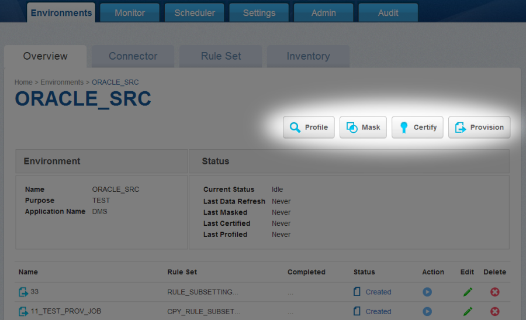
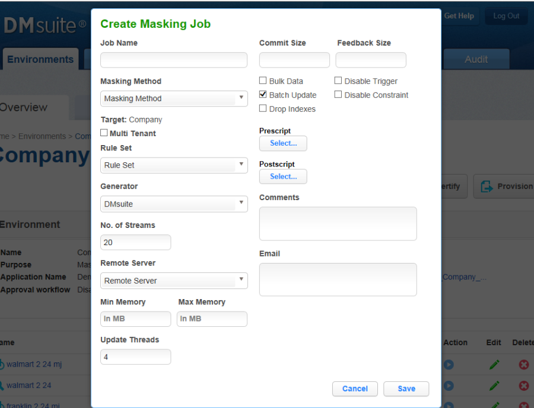
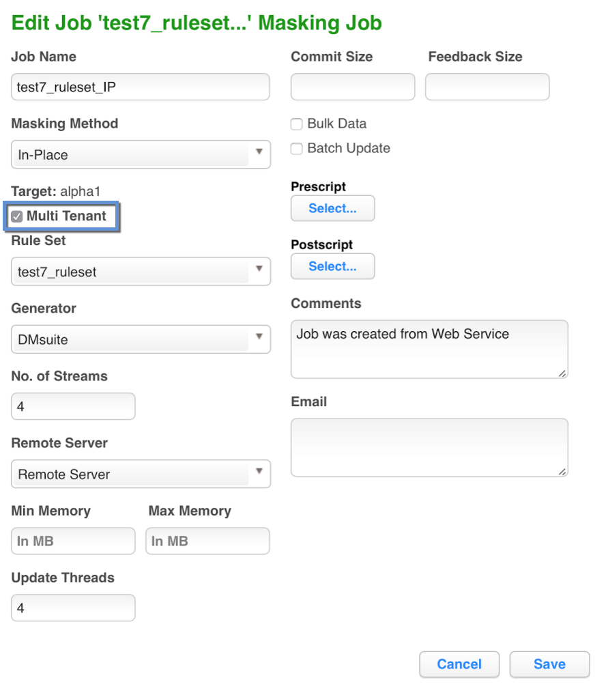
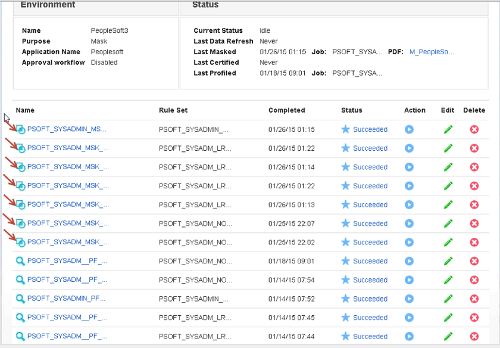

Creating Masking Job¶
This section describes how users can create a masking job.
Creating New Jobs¶
In the Environment Overview screen, select one of the jobs icons to create the corresponding job:
-
Profile
-
Mask

Creating a New Masking Job¶
To create a new masking job:
-
Click Mask. The Create Masking Job window appears.

-
You will be prompted for the following information:
-
Job Name — A free-form name for the job you are creating. Must be unique across the entire application.
-
Masking Method — Select either In-Place or On-The-Fly. For more information on masking type, see Mask Data. [Need to create this link]
-
Multi Tenant — Check box if the job is for a multi-tenant database.
INFO: Provisioning Masked VDBs.
A job must be Multi Tenant to use it when creating a masked virtual database (VDB). 
-
Rule Set — Select a rule set that this job will execute against.
-
Generator — The default value is Delphix.
-
Repository Folder name — The folder name in the repository where the objects should be imported.
-
Parameter File Path — (optional) If checked, this tells Delphix to configure the sessions and workflows to use a parameter file that contains the source and target connection information. If unchecked, the Delphix Engine will generate sessions/workflows that use the connector names as defined within the Delphix Engine, which will require connections with the same names defined within the repository.
-
Import Mapplet — (optional) if checked, this tells the Delphix Engine to import mapplets that are assigned to columns in the inventory along with the mappings/sessions/workflows. If unchecked, Delphix will not attempt to import any mapplets that are assigned in the inventory.
-
Mask Method — Choose either of the following:
-
No. of Streams—The number of parallel streams to use when running the jobs. For example, you can select two streams to run two tables in the Rule Set concurrently in the job instead of one table at a time.
-
Import — When you click the Run icon, creates the mappings but does not execute the workflow. You later run the job.
-
Import and Run — When you click the Run icon, creates the mappings and executes the workflow.
-
-
Remote Server — (optional) The remote server that will execute the jobs. This option lets you choose to execute jobs on a remote server, rather than on the local Delphix instance. Note: This is an optional feature for Delphix.
-
Min Memory (MB) — (optional) Minimum amount of memory to allocate for the job, in megabytes.
-
Max Memory (MB) — (optional) Maximum amount of memory to allocate for the job, in megabytes.
-
Update Threads — The number of update threads to run in parallel to update the target database.
Info
Multiple threads should not be used if the masking job contains any table without an index. Multi-threaded masking jobs can lead to deadlocks on the database engine.
Multiple threads can cause database engine deadlocks for databases using T-SQL If masking jobs fail and a deadlock error exists on the database engine, then reduce the number of threads.
-
Commit Size — (optional) The number of rows to process before issuing a commit to the database.
-
Feedback Size — (optional) The number of rows to process before writing a message to the logs. Set this parameter to the appropriate level of detail required for monitoring your job. For example, if you set this number significantly higher than the actual number of rows in a job, the progress for that job will only show 0 or 100%.
-
Bulk Data — (optional) For In-Place masking only. The default is for this check box to be clear. If you are masking very large tables in-place and require performance improvements, check this box. Delphix will mask data to a flat file, and then use inserts instead of updates to bulk load the target table.
-
Disable Constraint — (optional) Whether to automatically disable database constraints. The default is for this check box to be clear and therefore not perform automatic disabling of constraints. For more information about database constraints.
-
Batch Update — (optional) Enable or disable use of a batch for updates. A job's statements can either be executed individually, or can be put in a batch file and executed at once, which is faster.
-
Disable Trigger — (optional) Whether to automatically disable database triggers. The default is for this check box to be clear and therefore not perform automatic disabling of triggers.
-
Drop Index — (optional) Whether to automatically drop indexes on columns which are being masked and automatically re-create the index when the masking job is completed. The default is for this check box to be clear and therefore not perform automatic dropping of indexes.
-
Prescript — (optional) Specify the full pathname of a file that contains SQL statements to be run before the job starts, or click Browse to specify a file. If you are editing the job and a prescript file is already specified, you can click the Delete button to remove the file. (The Delete button only appears if a prescript file was already specified.) For information about creating your own prescript files.
-
Postscript — (optional) Specify the full pathname of a file that contains SQL statements to be run after the job finishes, or click Browse to specify a file. If you are editing the job and a postscript file is already specified, you can click the Delete button to remove the file. (The Delete button only appears if a postscript file was already specified.) For information about creating your own postscript files.
-
Comments — (optional) Add comments related to this masking job.
-
Email — (optional) Add e-mail address(es) to which to send status messages.
-
-
When you are finished, click Save.
